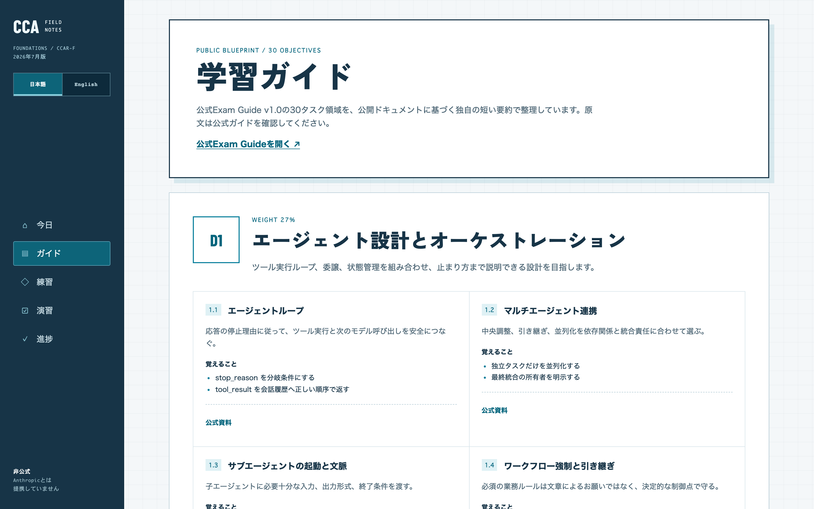
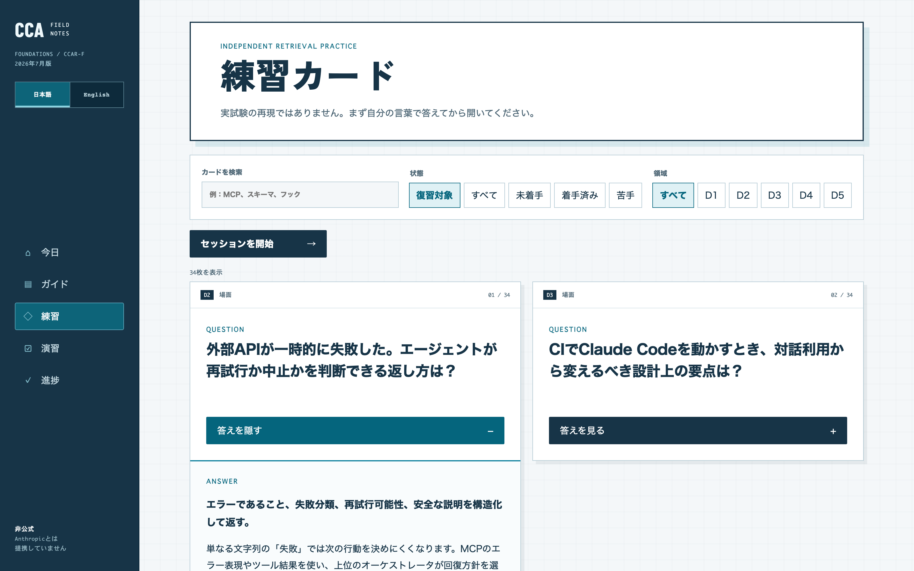
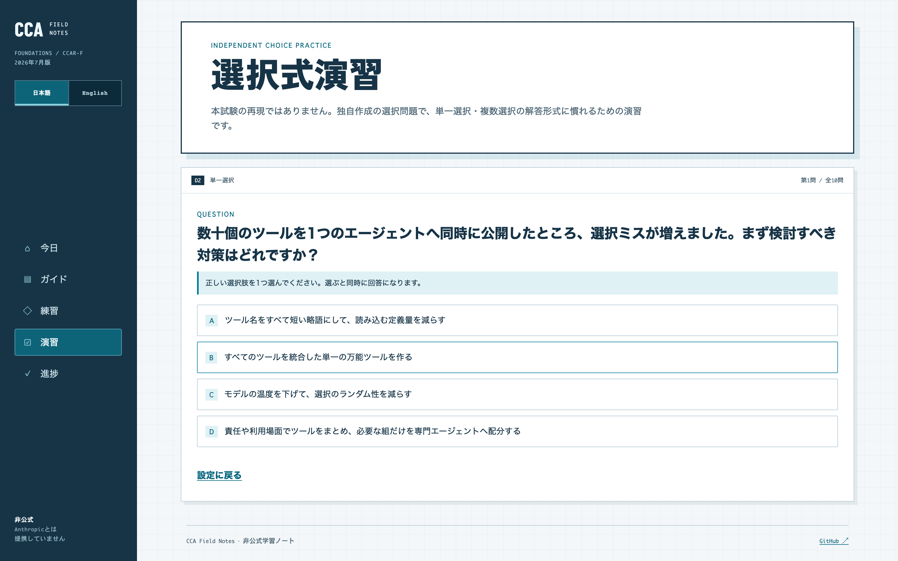
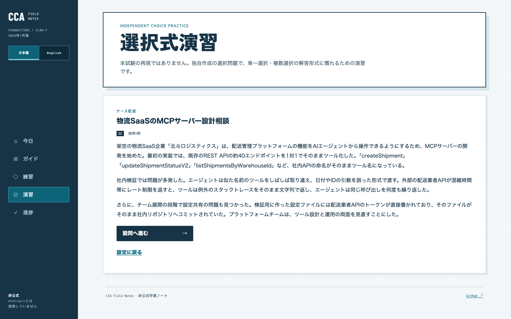
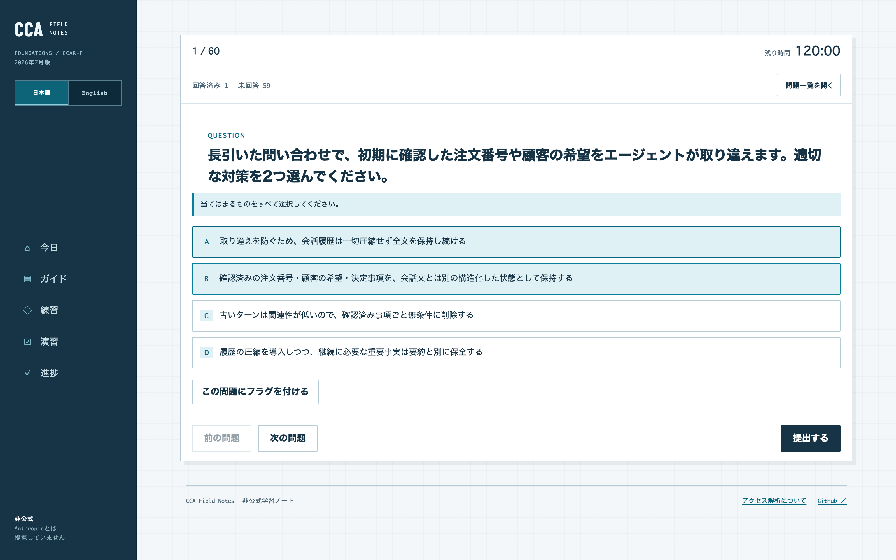
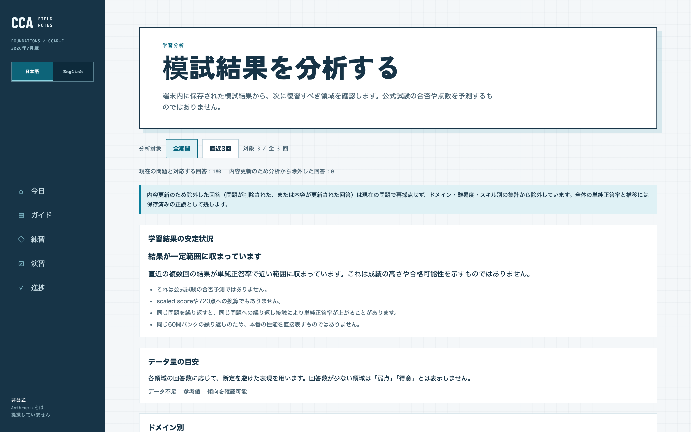

Claude Certified Architect – Foundations
何から対策する？
非公式の学習アプリ、あります。
非公式
Anthropic非公式・非提携の学習アプリです
Guide / 5 domains · 30 tasks
出題範囲を、
日本語で。
公式Exam Guideの5領域・30タスクを独自の短い要約で整理
D1
27%
D2
18%
D3
20%
D4
20%
D5
15%
cca.toshi0607.com

CCA
FIELD
NOTES
非公式
Anthropic非公式・非提携の学習アプリです
Recall cards / 51
思い出してから、
開く。
想起カード51枚。考えてから開示し、3段階の自己評価で復習間隔が決まる
cca.toshi0607.com

CCA
FIELD
NOTES
非公式
Anthropic非公式・非提携の学習アプリです
Choice practice + scenarios
本番形式で、
腕試し。
単一・複数選択の演習と、ケース記述を読んで答えるシナリオ演習
cca.toshi0607.com


CCA
FIELD
NOTES
非公式
Anthropic非公式・非提携の学習アプリです
Mock exam / 60 questions · 120 min
60問120分、
通しで。
本番規模の通し模試。中断しても再開でき、履歴と設問ごとの復習つき
cca.toshi0607.com

CCA
FIELD
NOTES
非公式
Anthropic非公式・非提携の学習アプリです
Learning analysis
結果から、
次の復習へ。
模試結果を領域別に分析し、次に復習すべき所を提示。合否や点数は出しません
cca.toshi0607.com

CCA
FIELD
NOTES
非公式
Anthropic非公式・非提携の学習アプリです
CCA
FIELD
NOTES
無料
/
登録不要
/
進捗はブラウザ内保存
cca.toshi0607.com
Anthropic非公式・非提携の学習アプリです